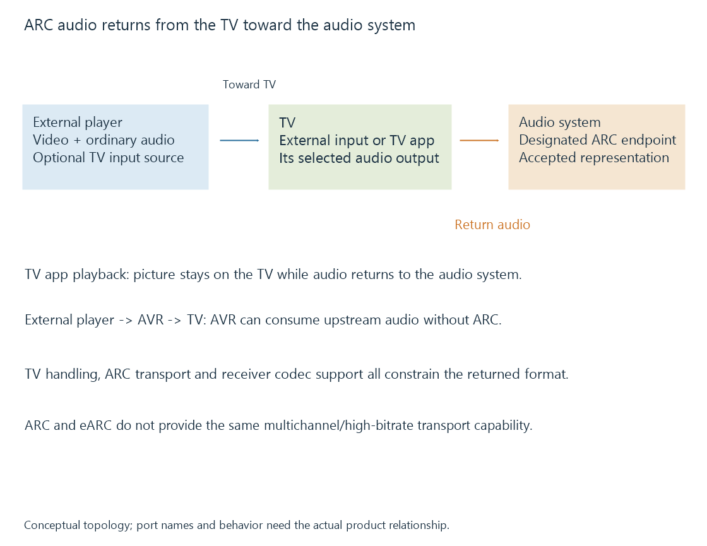

HDMI Audio Return Channel (ARC)
HDMI Audio Return Channel sends supported audio from a TV toward an audio system over a designated return-audio connection.
ARC, Audio Return Channel, provides an audio path from a TV toward a compatible audio system through designated HDMI ports.
The word “return” describes its direction relative to the ordinary video/audio connection from an external source toward the TV.
The TV can be the audio source
If the Emby app runs on the TV, the TV already owns the playback’s audio output. ARC can carry an implemented audio representation from that TV to a receiver or soundbar.
It does not require the TV app to send a movie video signal out to the receiver. The TV is showing its own presentation while returning audio.

An external player connected directly to the TV creates another case: the TV receives the player’s audio and then must produce or forward a representation accepted by its return-audio route.
Direct receiver input is a different path
If the external player connects to the AV receiver first, the receiver can consume the ordinary upstream HDMI audio before forwarding video to the TV.
That arrangement does not require ARC for that player’s audio. Switching between these topologies can therefore change available formats even when the receiver and TV are the same devices.
AV receivers develops the two-picture-link arrangement.
Codec support and return transport both matter
ARC commonly carries stereo PCM and supported compressed formats. It does not provide the same multichannel linear-PCM/high-bitrate transport capability as eARC.
A receiver supporting a codec at an ordinary HDMI input does not establish that the TV can pass that codec through its ARC output. The TV’s input handling, selected output representation and the return endpoints all participate.
An Emby source can be decoded to PCM, passed as an accepted compressed bitstream or converted according to its implemented route. Those choices have different transport requirements.
Bitstream passthrough separates the codec representation from the path carrying it.
The designated endpoints must participate
ARC uses compatible return-audio ports and the corresponding setup/control relationship. An arbitrary HDMI input on the TV is not necessarily its ARC endpoint.
CEC-based control is commonly part of ARC arrangements, while the picture transport and control settings remain their own operations. Device labels and documented behavior should identify the actual supported route.
Enhanced ARC expands the return-audio capability through a different supported arrangement. Its presence on one end alone does not convert an ARC-only counterpart into an eARC receiver.
See Also
- HDMI Enhanced Audio Return Channel (eARC)
- AV receivers in the video path
- HDMI-CEC control and device addressing
- Audio Bitstream Passthrough